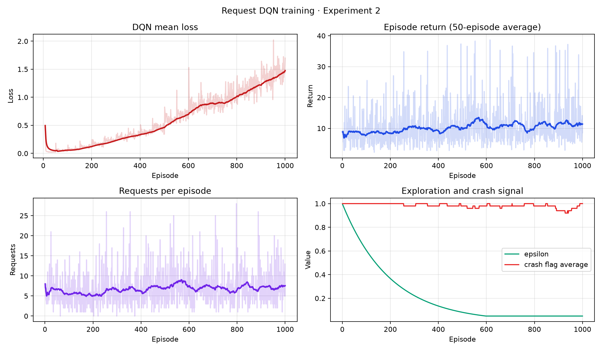

Training
Dataset pipeline
The training data combines two sources:
- Intent-aware records, where the ego can request messages from visible vehicles.
- Random no-message records, where the ego requests nothing and takes random actions.
Each experiment uses data/experiment_N/combined_world_model_dataset.jsonl. All collection, training, evaluation, and rendering scripts accept the same --experiment N option, which keeps the corresponding data, checkpoints, and results together.
Experiment 1 · End-to-end baseline training
The checkpoints and graphs below represent the first baseline training experiment:
- Train MLPx on the initial 26,597-transition merged dataset.
- Freeze that MLPx checkpoint.
- Train the Request DQN for 1,000 episodes while the frozen MLPx planner chooses ego driving actions.
These results establish the baseline. Experiment 2 repeats this sequence with a larger dataset, as documented below.
Train MLPx
.venv/bin/python -m scripts.training.train_mlpx_wm \
--experiment 1 \
--epochs 50 \
--batch-size 128 \
--lr 1e-3The best checkpoint is saved to checkpoints/experiment_1/MLPx/best.pt. Training uses next-state MSE and reward MSE. Episodes, rather than individual transitions, determine the held-out split to reduce leakage between train and test data.
Train the request DQN
The request DQN learns which spatial vehicle slot to ask, or whether to ask nobody. The frozen MLPx planner then chooses the ego driving action using a three-step horizon.
.venv/bin/python -m scripts.training.train_request_dqn \
--experiment 1 \
--episodes 1000 \
--planning-horizon 3 \
--communication-cost 0.05The request actions are the eight visible spatial slots plus ask nobody. The DQN reward is the real driving reward minus the communication cost when it asks a vehicle.
Each run writes a CSV log under results/experiment_1/RequestDQN/experiments/<timestamp>/request_dqn_training.csv with episode return, mean loss, epsilon, request count, crash, and truncation columns. Use --log-path PATH to choose a different location.
Training graphs
MLPx

Request DQN

Experiment 1 evaluation
The current checkpoint achieved held-out one-step metrics of next-state RMSE 0.0677 and reward RMSE 0.0828. In open-loop evaluation, state RMSE was 0.0935 after three steps and 0.1201 after five steps on random no-message sequences.
The real-rollout comparison shows the same horizon effect: three-step reward MAE is 0.336 without messages and 0.383 with all visible messages, while five-step reward MAE is 0.723 and 0.635, respectively. MLPx matched the real environment's best action 66.7% of the time at three steps without messages, versus 23.1% at five steps.
The DQN baseline currently shows improving return but unstable learning loss and frequent crashes. It should therefore be compared with future runs using the same validation seeds, rather than treated as a finished policy.
Model evaluation scripts
MLPx rollout accuracy:
.venv/bin/python -m scripts.evaluation.evaluate_mlpx_rollout \
--experiment 1 --episodes 10 --states-per-episode 3Request-policy validation:
.venv/bin/python -m scripts.evaluation.evaluate_request_dqn \
--experiment 1 --episodes 200 --planning-horizon 3Both evaluators write their metrics under the selected experiment's results/experiment_N/evaluation/ directory.
The Experiment 1 MLPx run is results/experiment_1/MLPx/experiments/20261119_110113_mlpx.
Experiment 2 · Larger dataset training
MLPx training, Request DQN training, and both evaluations are complete. The sequence is to train MLPx, freeze its best checkpoint, and train the DQN with that checkpoint providing the driving planner's predictions.
Dataset
| Source | Records | Source episodes |
|---|---|---|
| Intent-aware policy | 197,553 | 1,000 |
| Random no-message | 25,822 | 1,000 |
| Combined | 223,375 | 2,000 |
The merged training input is data/experiment_2/combined_world_model_dataset.jsonl. It contains 526 crash transitions. The intent-aware collection completed 40,000 actual rollout steps across 1,000 episodes, or 40 steps per episode at one decision per second. See the dataset dashboard for source statistics.
Train MLPx
.venv/bin/python -m scripts.training.train_mlpx_wm \
--experiment 2 \
--epochs 50 \
--batch-size 128 \
--lr 1e-3Training minimizes next-state MSE plus reward MSE using Adam. Episode groups determine the train/test split. The lowest recorded test loss was 0.004263 at epoch 42: state MSE 0.003011 and reward MSE 0.001252.
The selected checkpoint is checkpoints/experiment_2/MLPx/best.pt. Training logs and the loss graph are stored in results/experiment_2/MLPx/experiments/20261119_165206_mlpx/.
MLPx training graphs

The chart uses the same four curves as Experiment 1: training total loss, test total loss, test state loss, and test reward loss.
Evaluate MLPx
.venv/bin/python -m scripts.evaluation.evaluate_mlpx_rollout \
--experiment 2 \
--episodes 10 \
--states-per-episode 3| Horizon | Messages | Valid states | State MAE | Cumulative reward MAE | Best-action agreement |
|---|---|---|---|---|---|
| 3 steps | None | 29 | 0.0213 | 0.0422 | 96.55% |
| 3 steps | All visible | 29 | 0.0574 | 0.1777 | 68.97% |
| 5 steps | None | 11 | 0.0385 | 0.1603 | 54.55% |
| 5 steps | All visible | 11 | 0.0749 | 0.2336 | 63.64% |
These are short-rollout results on normalized states. The evaluator excludes cases where any candidate action terminates before the requested horizon, so these metrics do not establish prediction accuracy near collisions. See MLPx results for the model discussion.
Train the request DQN
.venv/bin/python -m scripts.training.train_request_dqn \
--experiment 2 \
--episodes 1000 \
--planning-horizon 3 \
--communication-cost 0.05The Experiment 2 MLPx checkpoint stays frozen during DQN training.
| Training metric | Result |
|---|---|
| Episodes | 1,000 |
| Mean return | 10.263 |
| Last 100 episodes: mean return | 11.423 |
| Mean loss | 0.618 |
| Last 100 episodes: mean loss | 1.407 |
| Mean requests per episode | 6.749 |
| Episodes with crash flag | 984 (98.40%) |
| Episodes with truncation flag | 16 (1.60%) |
| Final epsilon | 0.05 |
The checkpoint is checkpoints/experiment_2/RequestDQN/best.pt. The training CSV is stored in results/experiment_2/RequestDQN/experiments/20261119_170031_request_dqn/.
Request DQN training graphs

Faint curves show individual episodes; solid curves show trailing averages over up to 50 episodes. As in Experiment 1, the panels show loss, return, requests, and exploration epsilon alongside the average crash flag (0–1). Loss is absent during the initial replay warmup. These curves describe exploratory training, rather than the fixed-seed evaluation below.
Regenerate the Experiment 2 documentation graphs from the latest training logs:
.venv/bin/python -m scripts.docs.plot_training_graphs --experiment 2Evaluate the request DQN
.venv/bin/python -m scripts.evaluation.evaluate_request_dqn \
--experiment 2 \
--episodes 200 \
--planning-horizon 3| Request policy | Mean return | Mean driving reward | Mean requests | Crash rate |
|---|---|---|---|---|
| DQN | 12.326 | 12.556 | 4.615 | 94.50% |
| Ask nobody | 11.973 | 11.973 | 0.000 | 93.00% |
| Random requests | 7.692 | 8.144 | 9.050 | 99.50% |
| Ask all visible | 6.855 | 7.705 | 16.985 | 100.00% |
Return includes communication cost; driving reward excludes it. The DQN has a small average return advantage over asking nobody, but a higher crash rate. Full-episode safety therefore remains unresolved despite the promising short-rollout World Model metrics.
Both evaluators save CSV and JSON artifacts under results/experiment_2/evaluation/. See the DQN policy page for the detailed comparison and Experiment 2 rendering.
Older experiment outputs are stored under results/archive/.